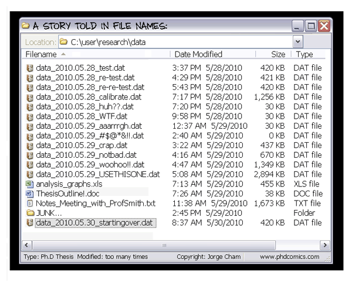

Contents
You just joined the lab and you are wondering how best to organize yourself! Or you are just getting started on the computational aspect of your project, and would like to start with all of the best practices.
Here are recommendations, references, and general guidelines.
First, take a quick look at A quick guide to organize your computational biology project. While a bit outdated, this paper contains all the core concepts we will discuss here.
Think about how to organize your code. I recommend a structure close to
the one proposed in the quick guide to organize your computation biology
project:
my_awesome_project/
- data/
- ay2009
- …
- scripts/
- data_cleaning
- normalization
- statistical_analysis
- …
- bin/
- my_awesome_package
- …
- results/
- notebook.html
- doc
- paper
- 2020_labmeeting
- …
data contains the raw data of your project. Ideally, create a small script to automatically download the data.
scripts contains a series of folders, each corresponding to a step in the data analysis process. In those folders, add all scripts necessary to this step. That includes visualization. A concrete example: working on Hi-C data, the first step is always to normalize the data. I thus create a folder normalization in scripts. In it, I add a script called normalize_counts.py and another one called plot_contact_counts.py. The first is the script I use to normalize the data. The second is a script I use to visualize the raw or the normalize contact counts: it outputs a png file for each of my datasets which I can then add to my labnotebook (more below).
bin contains any package you may be developping for this particular project. It can also be empty if you don’t develop anything.
results contains the labnotebook. This notebook should either by an html file or something that can be compiled in an HTML file so that it is easily shareable with collaborators.
doc contains any communication document you may be creating relating to this project.
By using this fairly standard code organization, anyone will be able to look at your project and understand where to find elements.
As soon as you have code, you should be using a version control system to track changes you make to it. It also allows you to have a backup of your code on a server somewhere. Version control system allows you to take snapshots of your code at any moment you want.
There are different tools to perform this. These days, the two most common one are git and mercurial. I personally recommend using git, as it is the one supported by the platform GitHub on which TrEE has an academic organization (reach out to Nelle or Sophie to get access to our academic organization https://github.com/TrEE-TIMC)
There are many publicly available resources to us git: https://git-scm.com/docs/gittutorial
Start simple get familiar with git add, git commit and git push before moving on to more advanced command.
If you plan on contributing to an open-source project, you need to be familiar with the concept of branching.
Keep track of all and any experiment your run, whether it fails or not! Do this in an electronic labnotebook, so that you can easily share it with collaborators. This is particularly useful if you are working remotely and/or have video confcall meeting regurlarly.
I use sphinx, the tool used to write documentation in Python to maintain my electronic labnotebooks.
Try to write something everyday.
You can ask our IT team to give you access to lacan via ssh and create a TIMC HTML members’s page to host the html files and share it with your collaborators. This page can be password protected through .htpasswd/.htaccess system, but you need to reach out to IT in order to activate this.
Make sure you can rerun your analysis from scratch with a single or very few commands!
I use makefiles in order to do this, but creating a large bash file would work as well. You can also add all your code in a jupyter notebook or Rmd file, but beware that jupyter notebooks don’t play well with version control. They are also not ideal for code reusability.
You can also set up travis in order to rerun your whole computational pipeline from scratch every time you push to github.